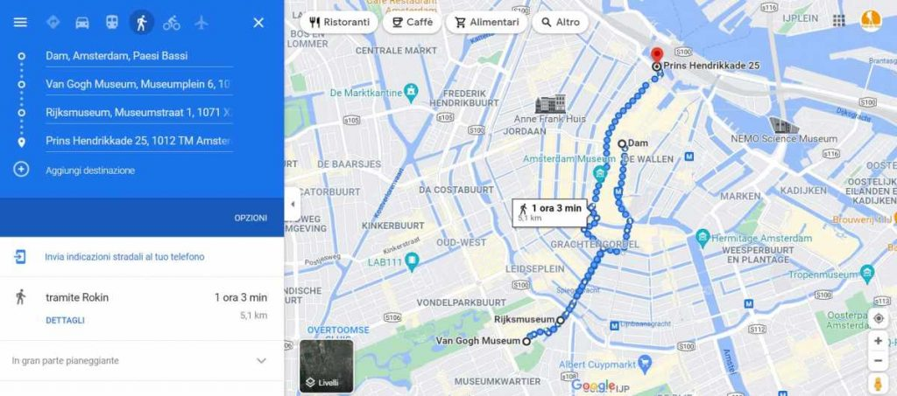

Consigli per visitare Amsterdam in 3 giorni
Questa serie di consigli su come visitare Amsterdam in 3 giorni (e perché no, anche risparmiare un pochino) ti aiuterà ad avere una migliore esperienza in città.
Ci sono diverse opzioni per il trasferimento dall’aeroporto di Amsterdam Schiphol al centro città o al tuo hotel.
- Treno: è l’opzione più economica e veloce. Funzionano 24 ore al giorno, partono ogni 15 minuti tra le 6:00 e l’1:00 e ti lasciano in 20 minuti alla Stazione Centrale.
- Autobus 197 o N97: ha un prezzo simile al treno, 5 euro, anche se impiega circa 10 minuti in più. Partono ogni 15 minuti tra le 6:00 e l’1:00 e si fermano nell’area del museo.
- Taxi: il suo prezzo di 50 euro lo rende consigliato solo se siete più persone o avete l’hotel lontano dal centro.
- Trasferimento diretto:È l’opzione più comoda, con la quale l’autista ti aspetterà in aeroporto con un cartello con il tuo nome per portarti direttamente in hotel.
La zona migliore in cui soggiornare ad Amsterdam, con una buona posizione e un prezzo ragionevole, è intorno ai canali Singel e Herengracht.
È in questa zona che si trova uno degli hotel più consigliati della città, il Singel Hotel Amsterdam, situato a 200 metri dalla Stazione Centrale e a 10 minuti a piedi dal centro storico. Un altro albergo dall’ottimo rapporto qualità prezzo è l’Hotel The Exchange, situato a 5 minuti a piedi da Piazza Dam. Se vuoi più informazioni leggi il mio post su dove alloggiare ad Amsterdam.
Noleggia una bici e sfrutta le migliaia di chilometri di piste ciclabili per raggiungere tutte le attrazioni turistiche.
Cosa vedere ad Amsterdam in 3 giorni: Giorno 1
Nel primo giorno del nostro itinerario di Amsterdam in 3 giorni, visiteremo due dei musei più visitati in Europa e ci prenderemo del tempo per passeggiare tranquillamente sui canali della città e fare una bellissima crociera in barca.
Free Walking Tour
Un ottimo modo per orientarsi verso la città è con un tour a piedi gratuito. Puoi imparare un po’ di storia, scoprire dove si trovano i principali luoghi d’interesse e cominciare ad orientarti in mezzo ai canali. Penso che i tour a piedi gratuiti siano una meravigliosa prima attività in qualsiasi città. Il tour offre una panoramica generale della città e dei suoi punti di riferimento. Benché gratuito, assicurati di lasciare la mancia alla tua guida!
Piazza Dam
Essenzialmente la piazza principale della città, Piazza Dam presenta diversi punti di riferimento
importanti e ospita spesso eventi. Il punto di riferimento più notevole è il Palazzo Reale, la
residenza della famiglia reale olandese.
Di fronte al palazzo dall’altra parte della piazza si trova il Monumento Nazionale, un obelisco in
pietra calcarea del 1956, che commemora coloro che morirono durante la seconda guerra mondiale.
Serve come sede di una cerimonia annuale osservata il 4 maggio (giorno della memoria olandese) in
ricordo della seconda guerra mondiale e dei caduti olandesi.
Poi c’è la Nieuwe Kerk, una chiesa gotica del XV secolo che in una piccola strada laterale rispetto
al palazzo.
De Bijenkorf (“The Beehive”) è uno dei principali grandi magazzini dei Paesi Bassi. Fondato nel
1870, qui troverai di tutto, dai marchi alla moda alle scarpe, oltre a cosmetici, accessori,
giocattoli e articoli per la casa.
Madame Tussauds, il museo delle cere confina con Piazza Dam e vale la pena andarci, se non altro per
il panorama che offre dalle finestre del piano superiore.
br
Fondato nel 1970, il museo è stato il primo del suo genere ad essere aperto in Europa dopo il più
celeberrimo di Londra ed è una tappa obbligata se lo visiti con i bambini!
Van Gogh Museum
Tra i tanti musei della città, il più popolare e visitato è il Van Gogh Museum, dedicato al famoso
pittore olandese.
Fidati, è davvero una meraviglia!
Il Museo ha la più grande collezione al mondo di opere d’arte e lettere del pittore olandese con
oltre 200 dipinti e oltre 500 disegni, tra cui alcune delle sue più grandi opere come I girasoli, La
camera da letto di Arles o I mangiatori di patate.
Tra i suoi dipinti più famosi, troverai anche alcune lettere a suo fratello Theo, che sono piuttosto
divertenti.
Ogni stanza segue un certo periodo della vita e della carriera di Van Gogh, quindi non solo vedrai
le sue opere, ma potrai anche conoscere un po’ di più la sua vita e la sua psicologia.
Resterai semplicemente affascinato.
Il Museo Van Gogh ha la fama di essere il museo più visitato dei Paesi Bassi e io sono sicura sia
vero. Le code, prima del COVID, erano la norma, ma ora i biglietti sono venduti solo online e con
orari di ingresso specifici.
Rijksmuseum
Uno dei musei più illustri della città è il Rijksmuseum, un museo nazionale incentrato sull’arte e la
storia. Ospitato all’interno di un grande edificio del XIX secolo, il Rijksmuseum vanta 80 gallerie
piene di arte e oggetti che raccontano e ripercorrono la storia dei Paesi Bassi.
Spesso noto soprattutto per la sua collezione d’arte dell’età dell’oro olandese e pezzi come la
Lattaia di Vermeer e La ronda di notte di Rembrandt, il Rijksmuseum è sicuramente un museo in cui
puoi perdere diverse ore solo esplorando le sue gallerie.
Qui troverai anche una vasta collezione di illustri opere d’arte di Rembrandt, Van Gogh, Vermeer,
Frans Hals e molti altri artisti: la sua collezione contiene più di un milione di pezzi di dipinti,
sculture e manufatti storici.
Crociera sui canali
Amsterdam è una città legata all’acqua; un po’ come la nostra famosissima Venezia (che rende noi
italiani orgogliosi in tutto il mondo) anche Amsterdam è cresciuta intorno ai suoi canali e al fiume
Amstel.
I canali di Amsterdam sono incredibilmente belli e vedere la città dall’acqua con un giro in barca è
sicuramente il modo migliore per conoscerla.
Alla sera: tour nel Red Light District (RLD), il quartiere a luci rosse di Amsterdam
Se sei interessato a saperne di più sulla storia di Amsterdam, il Red Light District è l’ex quartiere
a luci rosse.
Sebbene oggi sia diverso rispetto ad allora, il quartiere a luci rosse riesce ancora a bilanciare
sesso squallido con l’essere una grande attrazione turistica internazionale. Durante il giorno, è un
posto tranquillo.
Di notte, la zona si riempie di giovani turisti ubriachi che saltellano da un bar all’altro, di
comitive di turisti con la macchina fotografica, coppie curiose e di tutto e di più.
Detto questo, il Red Light District, o Rossebuurt come è chiamato dalla gente del posto, è uno dei
quartieri più antichi ed interessanti della città con le sue strette e tortuose strade acciottolate
e con la sua assolutamente affascinante architettura.
Mappa dell’itinerario del Primo giorno ad Amsterdam
Cosa vedere ad Amsterdam in 3 giorni: Giorno 2
Cominceremo il nostro itinerario del secondo giorno ad Amsterdam, andando a visitare la Casa di Anne
Frank e il quartiere di Joordan.
Ma prima fermati alla Pancake Bakery che si trova lì vicino ed è un ottimo posto dove fare la
colazione per caricarti delle energie che ti serviranno in questo secondo giorno ad Amsterdam.
Senza dubbio, una visita ad Amsterdam non sarebbe completa senza una visita alla Casa di Anna Frank.
Con più di un milione di visitatori all’anno, il nascondiglio della famiglia Frank è probabilmente
l’edificio più famoso di Amsterdam.
Per due anni e un mese, Anne Frank e la sua famiglia hanno vissuto in una parte di casa segreta,
nascosti dai nazisti, prima di essere scoperti e venire deportati ad Auschwitz.
Durante la sua permanenza qui scrisse il suo diario, che divenne un ricordo e un importante pezzo di
storia.
Visita le stanze nascoste e guarda la libreria mobile che copriva l’ingresso nelle stanze.
I biglietti possono essere acquistati solo online in anticipo. Prenoterai una fascia oraria
specifica. L’80% dei biglietti viene rilasciato esattamente 2 mesi prima.
Quartiere di Jordaan
Dalla casa di Anna Frank, puoi attraversare il canale e ritrovarti nel quartiere di Jordaan. Questo
sobborgo è passato attraverso una riqualificazione e rinnovamento negli ultimi anni ed è ora
piuttosto elegante e vivace.
Dopo un po’ di girovagare per le sue strade, puoi fermarti in uno dei tanti caffè o bar oppure
sederti in uno dei suoi ristoranti.
Qualche posto consigliato:
- Winkel 43: famoso per la sua torta di mele!
- Reypenaer Proeflokaal: Il mio negozio di formaggi preferito ad Amsterdam. È confezionato in modo tale da poterlo persino portare a casa con te!
- Marqt: un negozio di alimentari di lusso.
- Cafe de Tuin: che siano le 10:00 o le 22:00, troverai questo accogliente caffè pieno di gente del posto.
Museo del Tulipano
Se si pensa ad Amsterdam si pensa ai tulipani. Quanti di noi sognano di visitare il Keukenhof durante
la fioritura?
Dal momento che la fioritura non è tutto l’anno, ho deciso di introdurre questo piccolo museo
situato in una stanza all’interno di un negozio di tulipani! Oltretutto è una delle cose fuori dagli
itinerari turistici di Amsterdam più divertente che ci sia. Una piccola perla.
Questo piccolo museo seminterrato ti racconta la storia dei tulipani in Olanda e la famigerata mania
dei tulipani che ha scosso l’economia olandese.
Non è mai affollato e se come me ami acquistare souvenir un po’ diversi sia per te che per qualche
amico, riempiti le tasche di bulbi da piantare a casa. Vedrai quando fioriranno in giardino che
colori!
Indirizzo: Prinsengracht 116, Jordaan, Centrum
Orari: Aperto tutti i giorni dalle 10:00 alle 18:00
Pranza al Foodhallen
La Foodhallen è ciò che suggerisce il nome: una food hall, ovvero un mercato alimentare al coperto.
Qui troverai un sacco di cibo delizioso ed è il posto perfetto dove pranzare per poi continuare con
il nostro itinerario.
Indirizzo: Bellamyplein 51 o Hannie Dankbaarpassage 47
Orari: Aperto tutti i giorni dalle 12:00 alle 12:00.
Vondelpark
Se hai tempo e se vuoi vedere una parte diversa di Amsterdam, una passeggiata a Jordaan ti porterà
all’imponente Vondelpark.
Dopo un po’ di tempo al chiuso nei musei, passeggiare in questo bellissimo parco è un bel cambio di
ritmo e un modo per respirare un po’.
Museum Amsterdam (Amsterdams Historisch Museum)
Dato che Amsterdam è una delle città più visitate d’Europa, se non del mondo, non è difficile
imbattersi in un museo ad ogni angolo. Il ricco patrimonio della capitale olandese è esposto in
numerose gallerie e musei che raccontano la storia della città.
Il Museo di Amsterdam si trova nel cuore del centro città e offre uno spaccato della storia e dello
sviluppo di Amsterdam da piccolo villaggio di pescatori a una delle più grandi città europee. Il
museo ha una vasta collezione di circa 100.000 oggetti che abbracciano l’intera storia della città.
È grande, quindi avrai bisogno di 3-4 ore per visitarlo come si deve.
Ci sono un sacco di cimeli, mappe, dipinti e display audiovisivi in tutto il museo.
Alla sera: birrificio Gooyer
Se vuoi bere qualcosa in un posto speciale ad Amsterdam, dovresti visitare il birrificio De Gooyer e
assaggiare una delle tante birre che produce. Il birrificio inoltre si trova accanto a un bellissimo
mulino a vento, uno dei pochi rimasti ad Amsterdam e un luogo unico da visitare.
Se non sei un amante della birra, vale comunque la pena andarci perché troverai un bel mix tra gente
del posto che viene a bere una birra e gente che viene da lontano per ammirare la splendida
location.
Mappa dell’itinerario del secondo giorno ad Amsterdam
Cosa vedere ad Amsterdam in 3 giorni: Giorno 3
Heineken Experience
Che cos’è? L’Heineken Experience è un bel museo da visitare che racconta la storia della Heineken, uno dei marchi di birra più famosi al mondo. Se come me ami la birra, lo adorerai! Qui imparerai tutto sulla Heineken, come è nata, come si produce, come si è evoluta nel tempo.
L’Heineken Experience è una delle attrazioni turistiche più popolari di Amsterdam!
Museo Van Loon
Il Museum Van Loon è una casa costruita nel 1672 che si trova sul canale Keizersgracht.
La casa era di proprietà della ricca famiglia di mercanti Van Loon che visse nella casa nel XIX secolo.
Willem van Loon ha co-fondato la Compagnia Olandese delle Indie Orientali nel 1602.
La casa è notevole, con un giardino lussureggiante che farà sentire i visitatori come se fossero entrati in un palazzo romano, con enormi stanze degne di un re. L’interno ti farà desiderare di aver vissuto lì.
Keizersgracht 672, Centrum, +31 20 624 5255, museumvanloon.nl. Aperto tutti i giorni dalle 10:00 alle 17:00. L’ingresso è di 12,50 euro.
FOAM
Il FOAM è un museo della fotografia che ospita immagini meravigliose, ma non molto visitato nonostante si trovi nella parte principale della città.
È un must per ogni amante della fotografia. Le quattro mostre cambiano continuamente, quindi non sai mai cosa potresti trovare (controlla online per i dettagli)! Hanno anche un bellissimo giardino esterno. È un piccolo museo e non ci vuole molto per vederlo.
Indirizzo: Keizersgracht 609, Centrum, +31 20 551 6500, foam.org.
Orari: Aperto tutti i giorni dalle 10:00 alle 18:00 (giovedì e venerdì 21:00)
Jewish Historical Museum (Museo di storia ebraica)
Il museo di storia Ebraica presenta una storia molto approfondita di Amsterdam. È grande, quindi avrai bisogno di 3-4 ore se vuoi visitarlo davvero nei dettagli.
Spesso trascurato a favore della Casa di Anna Frank, il Jewish Historical Museum racconta la storia della posizione di spicco e influente degli ebrei ad Amsterdam.
La mostra sulla seconda guerra mondiale fa un ottimo lavoro nell’evidenziare il compiacimento, la resistenza e il senso di colpa olandesi per l’Olocausto.
Con 11.000 oggetti, manufatti e opere d’arte, è l’unico museo di storia ebraica del paese.
Indirizzo: Nieuwe Amstelstraat 1, Centrum
Orario: Aperto tutti i giorni dalle 11:00 alle 17:00.
Rembrandt House Museum
Il pittore olandese Rembrandt Harmenszoon van Rijn è generalmente considerato uno degli artisti più prolifici e talentuosi della storia.
Se sei appassionato il Rembrandt House Museum è da non perdere.
Ha vissuto e lavorato in questa casa, oggi trasformata in museo, tra il 1639 e il 1658 durante l’età dell’oro olandese.
I visitatori possono esplorare la casa per avere un’idea di come lavorava e viveva (hanno ricreato la casa come era esattamente ai tempi di Rembrandt).
Indirizzo: Jodenbreestraat 4, Rembrandtplein, Centrum
Orari: Aperto dal martedì alla domenica dalle 10:00 alle 18:00.
Alla sera: Nightlife di Amsterdam, Pub e locali!
Qui sotto trovi i locali, le discoteche e le birrerie più famose di Amsterdam!
Sky Lounge è uno dei bar più costosi di Amsterdam, ma ne vale davvero la pena. È proprio in centro e ha una terrazza con una vista incredibile sullo skyline della città.
Hannekes Boom – un bel posto sull’acqua. Inoltre, ci sono molti posti per sedersi fuori e per parcheggiare le barche, infatti puoi arrivarci anche in barca!
Waterkant – Un altro ottimo posto per un drink serale sui canali. Waterkant ha sia cibo che bevande, il che è ottimo per prepararsi per una serata fuori. È anche proprio accanto a Liedesplein, quindi se hai deciso poi di andare da qualche altra parte, hai tante scelte nelle vicinanze.
Jimmy Woo è un popolare night club “fantasioso” a Leidseplein. È uno dei pochi posti in città che segue un rigido codice di abbigliamento, ma è super divertente e ha un’atmosfera più pulita rispetto alla maggior parte dei club in questa zona.
L’Amsterdam Nightlife Ticket include più di 20 discoteche e bar, a cui puoi accedere tutte le volte che vorrai durante il tempo di validità della tessera.